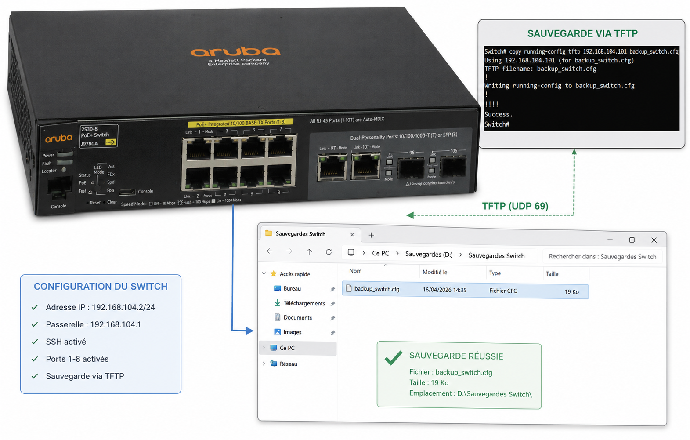
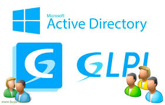
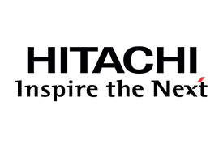

Java
Base de la POO
Passionné par l'informatique, les nouvelles technologies, le développement ainsi que par le réseau et ses infrastructures. Toujours prêt à apprendre et progresser.
Saad Rhazzoul / 20 ans
Étudiant en 1re année de BTS SIO option SISR, je me spécialise dans les infrastructures réseau, la cybersécurité et l'administration des systèmes.
Langages de programmation et frameworks
Compétences en développement d'applications, scripts et projets logiciels.
Base de la POO
Front-end & interactivité
Scripts & automatisation
Structure & mise en page web
Scripts shell & automatisation
Statistiques & traitement de données
Programmation système

Formation en ligne sur les fondamentaux de l'intelligence artificielle avec la plateforme MOOC.fi.

Formation en ligne pour s'initier à la cybersécurité, approfondir ses connaissances et protéger efficacement ses outils numériques.

Formation en ligne pour s'initier à la protection des données ou approfondir ses connaissances en la matière.

 Mission 1 · Soccer78
Mission 1 · Soccer78
15 jan. – 29 jan. 2026
Projet PPE2 réalisé en équipe dans un environnement de test sous VMware : installation du serveur, configuration du réseau et du DHCP, ajout des clients puis mise en place de RustDesk pour la prise en main à distance.

Mission 2 · Soccer7805 Fév. – 12 Mars. 2026
Suite du projet avec des tests et l'intégration des équipements réseau : configuration du switch Aruba, accès sécurisé en SSH et mise en place d'une solution de sauvegarde des configurations.

Mission 3 · Soccer7819 Mars. – 16 Avr. 2026
Phase de finalisation et d'administration de l'infrastructure : déploiement de GLPI, liaison avec l'Active Directory, configuration du serveur NTP et amélioration des services réseau.
Cette formation couvre l'ensemble du cycle de vie des services informatiques : de la conception à la mise en production, en passant par l'exploitation et la sécurisation. Les titulaires du BTS SIO sont immédiatement opérationnels en entreprise grâce à une pédagogie orientée projets et une immersion professionnelle via les stages.
La formation allie théorie solide et pratique intensive, avec des projets réels et des mises en situation professionnelles.
Les étudiants sont encouragés à obtenir des certifications reconnues (ANSSI, Cisco, RGPD…) qui renforcent leur expertise.
Réseau, système, développement, cybersécurité : un profil BTS SIO s'adapte aux différents besoins IT de l'entreprise.
La veille technologique fait partie intégrante de la formation, garantissant un profil toujours à jour sur les dernières technologies.
Deux spécialités au choix
L'option SISR prépare aux métiers de l'administration des réseaux et systèmes. Elle permet de maîtriser l'installation, la configuration et la sécurisation des infrastructures informatiques.
L'option SLAM forme aux métiers du développement d'applications. Elle permet d'acquérir les compétences pour concevoir, développer et maintenir des solutions logicielles adaptées aux besoins des organisations.
Document officiel de synthèse des compétences et activités du BTS SIO (épreuve E5).
Voir le tableau E5
Ce stage s'inscrit dans le cadre de ma formation BTS SIO option SISR. Il vise une première immersion concrète dans l'administration des infrastructures réseau et systèmes en entreprise.
J'intègre l'équipe pour participer au support et à la mise en œuvre réseau sur des projets ferroviaires, en collaboration avec des ingénieurs et administrateurs expérimentés.
Environnement industriel structuré, avec des enjeux techniques et normatifs propres au secteur du rail.
Participation à des activités de support et de mise en œuvre réseau :
Découvrir l'architecture du projet (LAN, VLAN, équipements actifs).
Switchs, routeurs et points d'accès.
Suivi des incidents simples.
Schémas et procédures réseau.
Création et gestion (Windows, Linux…).
VMware, Proxmox ou équivalents.
Ces missions permettent d'appréhender :
Principes fondamentaux d'un réseau informatique en entreprise.
Fonctionnement et configuration des équipements réseau.
Introduction à l'administration IT : VMs, virtualisation, installation d'OS.
Première immersion dans le secteur ferroviaire et ses contraintes.
Missions concrètes réalisées chez Hitachi Rail GTS France, chacune accompagnée de son compte rendu détaillé au format PDF.
Mise en place de postes opérateurs dans le cadre d'un projet de conduite de train. 26 mai 2026
Installation et configuration d'un hyperviseur Proxmox VE. 27–28 mai 2026
Création et installation de machines virtuelles sur le serveur Proxmox VE. 29 mai – début juin 2026
Configuration réseau et interconnexion des machines virtuelles. 2 juin 2026
Mise en place d'Active Directory, du DHCP, de l'organisation en OU et des stratégies de groupe (GPO). 3–4 juin 2026
Période prévue en fin de 2e année de BTS SIO, pour approfondir les compétences SISR acquises en entreprise.
La veille technologique consiste à surveiller les évolutions, innovations et tendances dans un domaine informatique afin de rester informé des nouvelles technologies et des menaces émergentes.
Dans le cadre de mon BTS SIO option SISR, j'ai choisi comme sujet de veille : le Big Data appliqué à la cybersécurité
Ma veille repose sur une méthodologie structurée en trois étapes : la collecte d'informations, l'analyse et le tri des contenus, puis le partage et la mise en application des connaissances acquises.
J'utilise principalement un agrégateur de flux RSS pour centraliser mes sources, complété par des alertes automatiques et la consultation régulière de sites spécialisés.
L'intersection du Big Data et de la cybersécurité génère des évolutions majeures. Voici les principales tendances identifiées lors de ma veille :
Les solutions de sécurité exploitent le machine learning pour analyser des milliards d'événements en temps réel et détecter des comportements anormaux (anomaly detection), bien au-delà des capacités humaines.
Les systèmes SIEM (Security Information and Event Management) collectent et corrèlent des volumes massifs de logs pour identifier les incidents de sécurité. Le Big Data permet de traiter ces données à une échelle jamais atteinte.
L'User and Entity Behavior Analytics utilise le Big Data pour établir des profils de comportement normaux et détecter les déviations — un levier clé contre les menaces internes et les comptes compromis.
Avec la migration vers le cloud, les volumes de données à protéger explosent. Les solutions de sécurité cloud-native s'appuient sur le Big Data pour surveiller en temps réel les environnements multi-cloud.
Les associations deviennent des cibles de plus en plus fréquentes des cyberattaques. L'article explique les risques liés aux données sensibles et les bonnes pratiques pour renforcer la sécurité informatique.
Lire l'articleUn expert en cybersécurité alerte sur l'explosion des attaques informatiques depuis plusieurs mois. L'intelligence artificielle facilite désormais les vols de données et les campagnes de cybercriminalité.
Lire l'articleLa startup Exaforce développe une plateforme de cybersécurité basée sur l'intelligence artificielle. Cette importante levée de fonds montre l'essor des technologies IA dans la protection des données.
Lire l'articleLes pays de l'ASEAN renforcent leur coopération contre les escroqueries en ligne et les cyberattaques. Cette collaboration régionale vise à améliorer la protection des données et la cybersécurité face à des menaces numériques en forte augmentation.
Lire l'articleMon arbre de veille Pearltrees centralise et organise visuellement l'ensemble de mes ressources sur le Big Data appliqué à la cybersécurité. Explorez les différentes branches pour découvrir mes sources, articles et outils.
Cette veille sur le Big Data appliqué à la cybersécurité montre que l'analyse de grandes quantités de données est devenue essentielle pour protéger les systèmes d'information.
Les technologies comme les SIEM, le machine learning et l'analyse comportementale permettent aujourd'hui d'anticiper et de détecter plus efficacement les menaces.